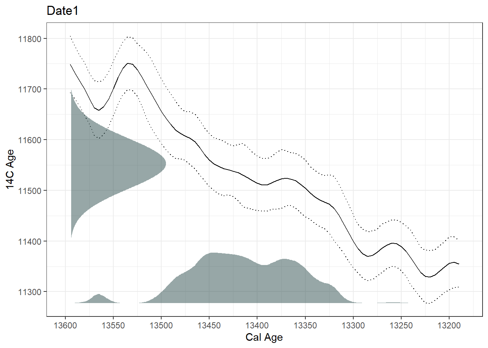
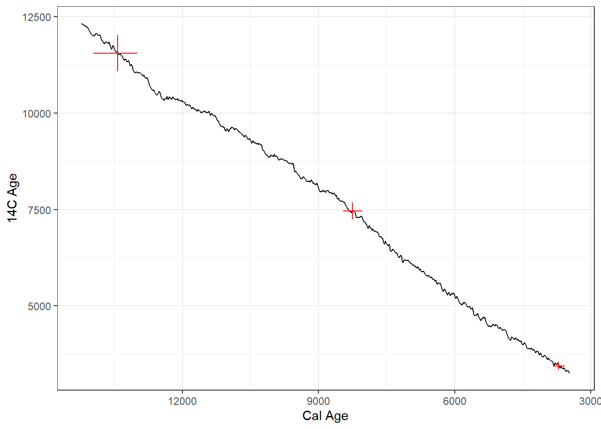
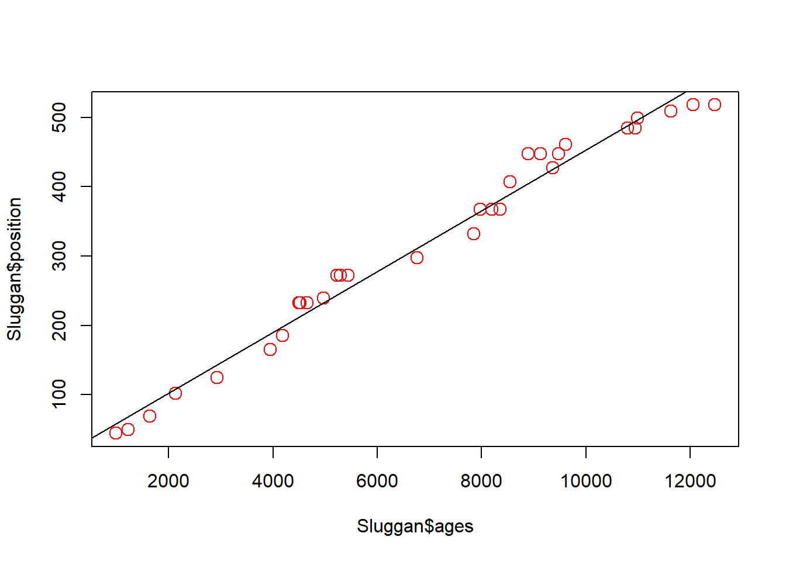
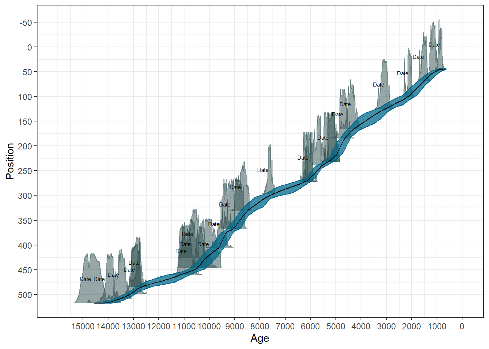

# Load up the package
if (!require("pacman")) install.packages("pacman", repos="http://cran.r-project.org")
pacman::p_load(neotoma2, Bchron, splines) # splines comes with BASE-RNeotoma age-depth
Background
For the last 50,000 years, radiocarbon (14C), with its half-life of 5,730 years, is by far the most common form of radiometric dating. (Beyond 10 half-lives, so much of a radioactive substance has decayed away that it becomes immeasurable.) Radiocarbon is the mainstay of Quaternary dating and archaeology.
In Quaternary paleoecology, radiocarbon dating is expensive – a single sample typically costs $300 to $500 – so usually a given lake-sediment record will have only a scattering (ca. 5 to 30) of radiocarbon dates and other age controls. Other kinds of age controls include volcanic ash layers (tephras), 210Pb (half-life: 22.6 yrs), optically stimulated luminescence (OSL) dates, historic events such as the rise in Ambrosia pollen abundances associated with EuroAmerican land clearance, etc. An age-depth model must be constructed to estimate the age of sediments not directly associated with an age control. In multi-site data syntheses, the number of age controls, their precision, and their likely accuracy are all fundamental indicators of data quality (e.g. Blois et al. 2011; Mottl et al. 2021).
To estimate ages for depths lacking radiocarbon date, an age-depth model is required. Age-depth models are fitted to the available age controls (age estimates with uncertainty for individual depths) and provide estimates of age as a function of depth, for all depths and ages within the temporal bounds of the model.
Here we will gain practice in working with age-depth models of various kind, and assessing their age estimates and uncertainty. We’ll begin with a bit of practice in calibrating radiocarbon years to calendar years and comparing the resulting age estimates from different calibration curves.
Packages required
We will be using Bchron for calibration and Bayesian age-depth modelling. Notably rbacon is another commonly used package, see Trachsel and Telford (2017) for a discussion on age-depth models. We will also be fitting some interpolation and linear models using BASE-R. Remember you must have packages both installed and loaded, often loading a package is done via the library(packagename) function. The following code using the pacman package takes care of installation and loading in one go.
Radiocarbon callibration and uncertainty
A complication in radiocarbon dating is that the initial calculation of a radiocarbon age assumes, by convention, that the amount of radiocarbon in the atmosphere is constant over time. See Ramsey (2008) for a good overview of 14C dating. This assumption is untrue, so all radiocarbon age estimates must be post-hoc calibrated using a calibration curve that is based on compiling radiocarbon dates of materials that have precise independent age estimates (e.g. tree rings, corals). Yet another complication in radiocarbon dating is that different calibration curves need to be used for the Northern vs. Southern Hemisphere and for the atmosphere vs. oceans, due to different residence times of 14C in these different reservoirs. For example, atmospheric radiocarbon that diffuses into the surface oceans usually will reside for centuries before phytoplankton biologically fix it through photosynthesis, which will lead marine 14C to be depleted (and ‘too old’) relative to atmospheric 14C. Use the wrong calibration curve and your age estimate will be inaccurate!
The IntCal series (IntCal04, IntCal09, IntCal13, IntCal20) is the community standard for calibrating radiocarbon dates to age estimates in calendar years in the northern hemisphere (e.g., Reimer et al. 2020). The SHcal series is used for the southern hemisphere. The conversion from radiocarbon to calendar years usually further increases the uncertainty of age estimates.
BchronCalibrate(ages=c(11553),
ageSds=c(50),
calCurves=c('intcal20')) |>
plot(includeCal = TRUE)
Calibrating radiocarbon dates in R
Here we’ll experiment with calibrating radiocarbon dates, using various calibration curves. Radiocarbon dated samples come back from the lab with a radiocarbon age and standard deviation, among other information. These two bits of information are used to calibrate the radiocarbon dates to estimated ages. R packages may have useful vignettes (package tutorials) and built-in datasets that provide handy test templates. The following code is modified from the Bchron vignette.
ages = BchronCalibrate(ages=c(3445,11553,7456),
ageSds=c(50,230,110),
calCurves=c('intcal20','intcal20','intcal20'))summary(ages)95% Highest density regions for Date1
$`94.4%`
[1] 3572 3834
95% Highest density regions for Date2
$`0.4%`
[1] 13004 13025
$`77.9%`
[1] 13059 13874
$`16.4%`
[1] 13923 14012
95% Highest density regions for Date3
$`94.6%`
[1] 8022 8423plot(ages)[[1]]
[[2]]
[[3]]
plot(ages, includeCal = TRUE, fillCol = 'red')`height` was translated to `width`.
The output summary indicates the range of the highest density regions (i.e., the most likely ‘real’ age range of the sample). The plot function in Bchron outputs a ggplot object of the high density regions of the most likely ages.
Your turn
The BchronCalibrate() example above uses three arguments: (i) uncalibrated ages (the estimated date returned from the lab); (ii) a standard deviation associated with each of the ages; (iii) a calibration curve associated with each of the dates. Take 5 minutes to:
- Experiment with calibrating a few different ages and standard deviations
- try a few single ages and plot the calibration curve as shown in Section 1.1
- check the function documentation for different calibration curves and try the southern hemisphere calibration.
Give a ✋ in zoom if you have questions and ✅ when you have managed to calibrate and inspect a few different dates.
We will go through a couple of examples together.
Types of Age-Depth Models
Different kinds of age-depth models exist, each with their own underlying assumptions and behavior. In the list below, #1-4 are classical or traditional forms of age-depth models, but Bayesian models are now the norm. The packages rbacon (usually referred to as ‘bacon’) and Bchron are the current standards for Bayesian age-depth modelling. Before going to bayesian models, we’ll begin with the classics.
Linear interpolation, a.k.a. ‘connect the dots,’ in which straight lines are drawn between each depth-adjacent pair of age controls.
Linear regression (\(y=b0~ + b1x\); \(y=\)time and \(x=\)depth; \(b0\) and \(b1\) are constants), in which a single straight line is fitted through the entire set of age controls. In ordinary linear regression (OLS), the chosen line will minimize the y-dimension distances of individual points to the line. Standard OLS assumes that all observations are normally distributed, which is a poor assumption for calibrated radiocarbon dates.
Polynomials, also fitted to the entire set of age controls (\(y= b0 + b1x + b2x^2 + b3x^3 + …bnx^n\)), are an extension of linear regression, with additional terms for \(x^2\), \(x^3\), etc. Some arbitrary maximum n is chosen, usually in the range of 3 to 5. These are called ‘third-order polynomials,’ ‘fifth-order polynomials,’ etc.
Splines, which are a special kind of polynomial function that are locally fitted to subsets of the age controls, and then smoothly interpolated between points. (Several different formulas can be used to generate splines; common forms include cubic, smooth, monotonic, and LOWESS).
Bayesian age models (e.g.
bacon,bchron,oxcal, etc.). Bayesian models differ in detail, but all combine a statistical representation of prior knowledge with the new data (i.e. the age controls at a site) to build an age-depth model with posterior estimates of age for any given depth. Bayesian models are now widely used because:- they allow the incorporation of prior knowledge (e.g., from coring many lakes, we now have decent estimates of typical sediment accumulation rates, Goring et al. (2012));
- they can handle highly irregular probability distribution functions such as those for radiocarbon dates after calibration; and as a result
- they generally do a better job of describing uncertainty than traditional age-depth models.
Classical age-depth models
Classical models are now out-dated methods (Blaauw et al. 2018), but it is useful to understand how they work as literature before the relatively recent development of Bayesian methods has relied on them. Let’s explore some classical methods of age-depth modelling using one of the datasets included with the Bchron package. The data are from a core in Northern Ireland; Sluggan Bog Smith and Goddard (1991), and can be called via:
data(Sluggan) # Call the data from Bchron
print(Sluggan) # Check out the dataLinear interpolation predicts ages by simply, drawing a line between successive dated samples. This method assumes that there is a constant age-depth relationship between samples. An assumption that is unlikely to be true, especially of cores with fewer dated samples than Sluggan Moss.
interp_ages <- approx(x = Sluggan$ages, y = Sluggan$position) # use the function approx() to interpolate between ages
plot(x = interp_ages$x, y = interp_ages$y, type = 'l') # Plot the interpolated data
points(x = Sluggan$ages, y = Sluggan$position, cex = 1.5, col = 'red') # overlay the original age points
Linear regression provides a line of best fit through the dated samples. This method assumes a constant age-depth relationship across all samples, also unlikely to be true depending on processes affecting the core during its formation.
mod_ages <- lm(Sluggan$position ~ Sluggan$ages) # Create a linear regression model
plot(x = Sluggan$ages, y = Sluggan$position, cex = 1.5, col = 'red') # Plot the original ages
abline(mod_ages) # add the regression line from the regression model
Polynomial regression allows a curve to be fit through the data. The amount the curve ‘wiggles’ depends on the order of the polynomial fit to the data. Polynomial regression has the risk of being over-fit.
x <- Sluggan$ages # Renaming the variables because the predict function below is fussy about the input name
y <- Sluggan$position
poly_ages <- lm(y ~ poly(x, 3))
plot(x = Sluggan$ages, y = Sluggan$position, cex = 1.5, col = 'red')
age_range <- seq(from = range(Sluggan$ages)[1], to = range(Sluggan$ages)[2], length.out = 250)
lines(age_range, predict(poly_ages, data.frame(x = age_range)))
Splines are a class of functions including, for example, smoothing splines or cubic splines. Cubic splines are pieve-wise polynomials locally between ‘knots’. That is the data are split into bins that are fit independently using. By default, the bs() function uses a third degree polynomial. Without providing knots the fit will look the same as a third degree polynomial regression.
cubic_ages <- lm(y ~ bs(x, knots = c(1000, 6000, 12000)))
plot(x = Sluggan$ages, y = Sluggan$position, cex = 1.5, col = 'red')
lines(age_range, predict(cubic_ages, data.frame(x = age_range)))
Because classical age-depth modelling is rarely used now we are not going to delve further into the statistical details of the best way of fitting each model (e.g., the number of knots to use for fitting a cubic spline).
One of the issues with classical age-depth modelling is that uncertainty decreases with fewer datapoints.
Bayesian age-depth models
Now let’s see what the latest methods show for the same dataset.
Note that all the values provided to the arguments are contained in the Sluggan dataframe. When creating chronologies from your own (or accessed data), you may need to rename them to match your data.
SlugganOut = with(Sluggan,
Bchronology(ages=ages,
ageSds=ageSds,
calCurves=calCurves,
positions=position,
positionThicknesses=thickness,
ids=id,
predictPositions=seq(0,518, by=10)))The summary shows for each position (depth) the median and quartiles of the predicted ages for that position.
summary(SlugganOut)Quantiles of predicted ages by depth:
Depth 2.5% 25% 50% 75% 97.5%
0 -60.000 95.75 253.5 450.25 730.000
10 29.875 246.50 409.0 569.25 789.050
20 141.950 379.75 536.5 670.75 830.075
30 271.900 540.00 671.0 762.50 879.000
40 501.700 723.25 795.0 859.00 928.025
50 963.975 1071.75 1131.0 1199.25 1333.025
60 1148.875 1269.00 1334.0 1399.00 1530.050
70 1401.975 1495.00 1551.0 1616.00 1756.075
80 1514.000 1653.00 1739.0 1831.00 2016.025
90 1607.950 1811.00 1906.0 1994.25 2159.025
100 1855.925 2010.75 2076.0 2165.25 2276.025
110 2166.950 2369.75 2474.0 2609.25 2900.075
120 2407.950 2721.75 2843.0 2941.00 3129.000
130 2970.875 3150.75 3262.0 3381.00 3760.100
140 3115.000 3393.75 3552.5 3727.25 4073.275
150 3280.925 3649.75 3834.0 3993.25 4252.200
160 3609.475 3974.00 4124.0 4223.25 4387.200
170 4207.000 4341.75 4412.5 4492.00 4634.050
180 4347.900 4490.75 4562.0 4636.25 4760.025
190 4528.975 4668.75 4740.5 4813.00 4940.000
200 4601.975 4749.00 4825.0 4896.25 5022.150
210 4686.950 4825.75 4906.0 4979.25 5099.000
220 4789.925 4917.00 4987.0 5049.00 5176.000
230 4897.975 5028.00 5081.5 5146.00 5279.100
240 5541.000 5638.00 5683.0 5727.00 5865.000
250 5641.000 5737.00 5787.0 5843.00 5974.025
260 5707.900 5823.75 5878.5 5933.00 6036.000
270 5823.825 5940.00 5984.0 6025.00 6122.100
280 6289.975 6468.75 6606.5 6809.50 7282.475
290 6516.825 6946.00 7151.5 7310.25 7544.025
300 7501.000 7623.00 7687.5 7780.00 8092.150
310 7643.925 7831.00 7963.5 8118.00 8413.225
320 7789.850 8071.75 8227.0 8368.00 8570.025
330 8084.700 8401.75 8497.5 8590.00 8769.175
340 8484.975 8605.00 8689.0 8781.00 8950.000
350 8550.000 8694.75 8783.0 8876.25 9052.125
360 8627.000 8794.75 8890.5 8979.00 9139.050
370 9042.900 9230.00 9299.0 9374.00 9508.250
380 9157.900 9326.75 9400.0 9474.25 9644.125
390 9251.000 9400.00 9473.0 9557.00 9756.000
400 9337.800 9478.75 9562.0 9652.25 9876.125
410 9499.950 9650.00 9751.0 9878.25 10122.025
420 9626.625 9844.00 9979.5 10114.25 10272.050
430 9798.950 10064.75 10255.5 10325.25 10462.000
440 9942.975 10173.75 10309.0 10385.00 10550.050
450 10426.925 10590.00 10685.0 10775.00 11027.050
460 10716.000 10904.75 11022.5 11106.25 11274.050
470 11148.925 11497.75 11711.5 11938.00 12398.175
480 11589.900 12193.50 12398.0 12546.50 12701.000
490 12741.875 12867.75 12925.0 12982.00 13104.075
500 12910.975 13054.75 13124.0 13192.00 13391.100
510 13333.975 13506.75 13604.5 13709.00 13889.125plot(SlugganOut)
Median and mean ages
Commonly, only the median age is reported; however, it is good practice to report and consider the range of possible ages, especially when exploring synchroneity of events across space. Notice how Bchron focuses on delivering ranges and densities.
Your turn
The Sluggan data provide a great in-built working dataset for us to play with. Take 5 minutes to:
- load up the
Sluggandataset (data(Sluggan)) - sample the dataset to reduce the number of rows(
Sluggan2 <- Sluggan[c(1, 10, 31), ]) - Run and plot the
Bchronage-depth model
Give a ✋ in zoom if you have questions and ✅ when you have managed to calibrate and inspect a few different dates.
Who has a figure they are willing to share?
Neotoma
Resources
Age-depth modelling is complicated, there are many pitfalls, assumptions, and uncertainties that are often ignored. Recent developments have begun to focus on quantifying uncertainties to understand the reliability of inferences made from the data. Key papers for understanding age depth modelling include:
The Bchron vignette is also a useful resource.
Blaauw, Maarten, J. Andrés Christen, K. D. Bennett, and Paula J. Reimer. 2018. “Double the Dates and Go for Bayes — Impacts of Model Choice, Dating Density and Quality on Chronologies.” Quaternary Science Reviews 188 (May): 58–66. https://doi.org/10.1016/j.quascirev.2018.03.032.
Blois, Jessica L., John W. (Jack) Williams, Eric C. Grimm, Stephen T. Jackson, and Russell W. Graham. 2011. “A Methodological Framework for Assessing and Reducing Temporal Uncertainty in Paleovegetation Mapping from Late-Quaternary Pollen Records.” Quaternary Science Reviews 30 (15-16): 1926–39. https://doi.org/10.1016/j.quascirev.2011.04.017.
Goring, S., J. W. Williams, J. L. Blois, S. T. Jackson, C. J. Paciorek, R. K. Booth, J. R. Marlon, M. Blaauw, and J. A. Christen. 2012. “Deposition Times in the Northeastern United States During the Holocene: Establishing Valid Priors for Bayesian Age Models.” Quaternary Science Reviews 48 (August): 54–60. https://doi.org/10.1016/j.quascirev.2012.05.019.
Mottl, Ondřej, Suzette G. A. Flantua, Kuber P. Bhatta, Vivian A. Felde, Thomas Giesecke, Simon Goring, Eric C. Grimm, et al. 2021. “Global Acceleration in Rates of Vegetation Change over the Past 18,000 Years.” Science 372 (6544): 860–64. https://doi.org/10.1126/science.abg1685.
Parnell, A. C., J. Haslett, J. R. M. Allen, C. E. Buck, and B. Huntley. 2008. “A Flexible Approach to Assessing Synchroneity of Past Events Using Bayesian Reconstructions of Sedimentation History.” Quaternary Science Reviews 27 (19-20): 1872–85. https://doi.org/10.1016/j.quascirev.2008.07.009.
Ramsey, C. Bronk. 2008. “Radiocarbon Dating: Revolutions in Understanding.” Archaeometry 50 (2): 249–75. https://doi.org/10.1111/j.1475-4754.2008.00394.x.
Reimer, Paula J, William E N Austin, Edouard Bard, Alex Bayliss, Paul G Blackwell, Christopher Bronk Ramsey, Martin Butzin, et al. 2020. “The IntCal20 Northern Hemisphere Radiocarbon Age Calibration Curve (0–55 Cal kBP).” Radiocarbon 62 (4): 725–57. https://doi.org/10.1017/RDC.2020.41.
Smith, A. G., and I. C. Goddard. 1991. “A 12500 Year Record of Vegetational History at Sluggan Bog, Co. Antrim, N. Ireland (Incorporating a Pollen Zone Scheme for the Non-Specialist).” The New Phytologist 118 (1): 167–87. https://www.jstor.org/stable/2557698.
Trachsel, Mathias, and Richard J Telford. 2017. “All Age–Depth Models Are Wrong, but Are Getting Better.” The Holocene 27 (6): 860–69. https://doi.org/10.1177/0959683616675939.